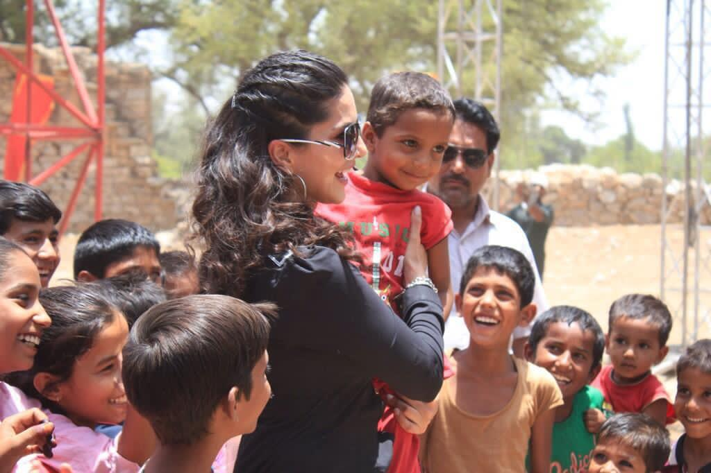

We knew foundations that primarily serve women and girls were being significantly impacted by COVID-19, so we made a grant in the spring to the Women’s Funding Network to help establish the Response, Recovery, and Resilience Collaborative Fund (RRRCF).
Last week, the fund announced it has provided $30,000 in grants to 16 nonprofits that are collectively serving the needs of over 40,000 women and girls in urban, rural, and suburban parts of the U.S. The applicants noted several high-priority needs in their communities, including a major one: Assisting women who are experiencing unemployment as a result of the pandemic.
Seventy-five percent of applicants cited this as a chief concern, along with dramatic increases in food and housing insecurity as well as reports of domestic violence and child abuse.
Because communities continue to face these obstacles, many of the RRRCF award recipients are dedicating higher amounts of funding to others at the expense of their own operating costs. In fact, 44% of the grantees plan to decrease operating costs, such as benefits and staff, to cover grant-making priorities.
Additionally, to improve the experience of individuals looking to help, the foundation has partnered with several giving and volunteering platforms to launch and regularly update PowerOf.org, a website that makes it easy to find ways to donate money or time to nonprofits, schools, community funds, and other organizations responding to COVID-19.
Most of the grantees of the Momentum Fund and the RRRCF are now searchable on PowerOf, giving them a way to reach new audiences and receive additional support.